더보기
딥러닝 논문 리뷰 GoogLeNet 논문 리뷰 Inception
ILSVRC 2014에서 VGGNet을 이기고 1등을 한 GoogLeNet 모델
VGGNet 과 유사한 점: 1 x 1 conv layer, depth 증가를 통해 성능 개선
GoogLeNet은 Inception이라는 독특한 구조를 제안
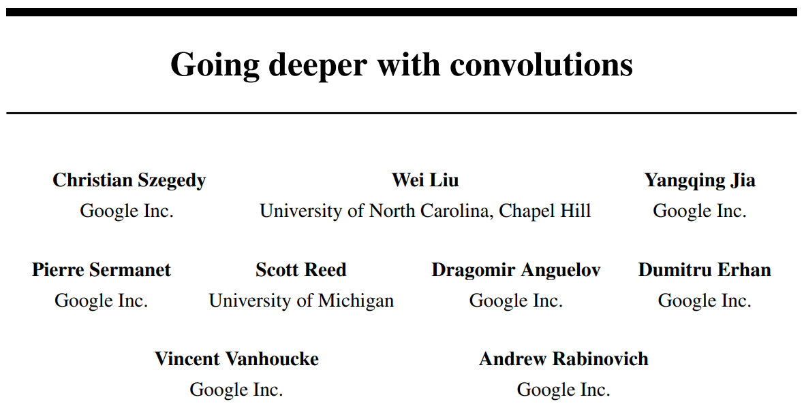
Going deeper with convolutions
↑ 논문 링크 ↑
목차
☞ Abstract
☞ Introduction
☞ Related Work
☞ Motivation and High Level Considerations
☞ Architectural Details
☞ GoogLeNet
☞ Training Methodology
☞ ILSVRC 2014 Classification Challenge Setup and Results
☞ ILSVRC 2014 Detection Challenge Setup and Results
☞ Conclusions
Abstract
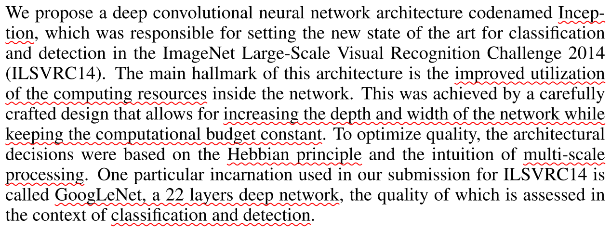
code name, Inception
GoogLeNet 구조의 주요한 특징은 연산에 소모되는 자원의 효율이 개선되었다는 것
-> 연산량을 유지하면서 네트워크의 depth와 width를 늘릴 수 있음
성능을 최적화하기 위해 Hebbian principle과 multi-scale processing 적용
22개 layer를 가진 심층 네트워크 이름을 GoogLeNet이라 하고
classification과 detection으로 평가
Introduction
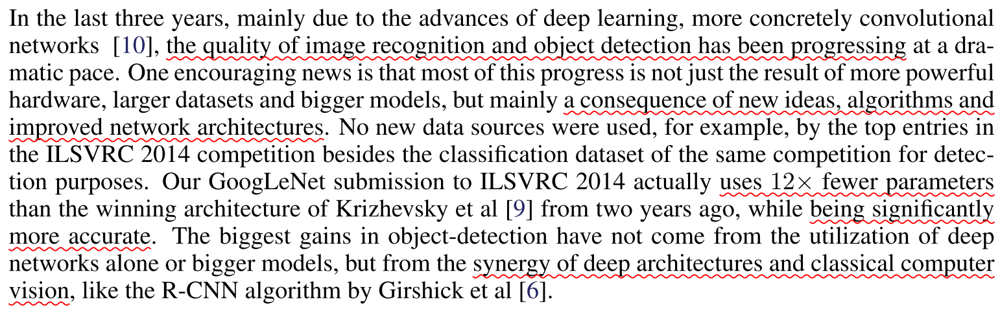
최근 3년, (2014 기준) 이미지 인식 및 객체 감지의 품질이 극적으로 발전
하드웨어의 성능, 더 큰 dataset, 더 큰 모델 뿐만 아니라 새로운 아이디어와 알고리즘, 개선된 네트워크 구조 덕분
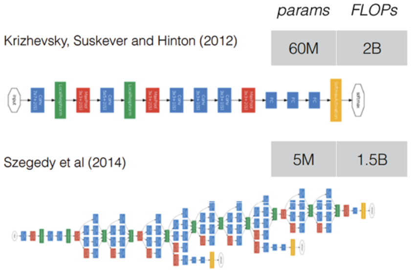
GoogLeNet은 AlexNet보다 훨씬 더 정확하면서 12배 적은 파라미터 사용
깊은 구조와 컴퓨터 비전의 시너지 효과
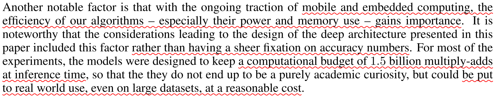
모바일 및 임베디드 컴퓨팅의 견인
-> 알고리즘의 효율성, 특히 전력 및 메모리 사용 중요
추론 시간에 15억까지의 곱셈 연산을 수행하도록 설계
-> 정확도라는 숫자에 집착하기 보다 현실에서 대규모 데이터에 합리적인 비용으로 사용할 수 있게 함
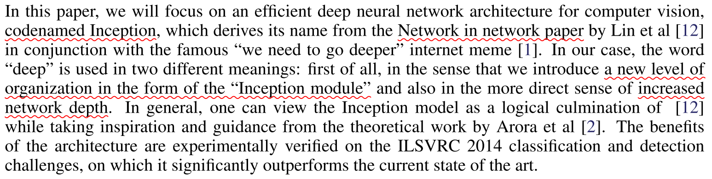
code name Inception은 Network in Network 논문에서 따온 것
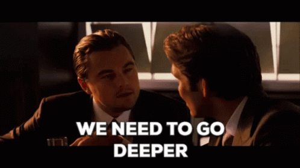
이 논문에서 "deep"이라는 단어의 의미
1. "Inception module"의 형태로 새로운 차원의 구조 도입
2. 네트워크의 깊이 증가
Related Work
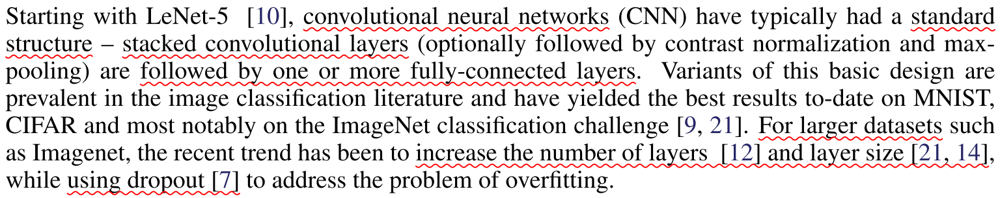
CNN의 표준 구조
: Conv layer 뒤에 1개 이상의 FC layer
대규모 dataset의 추세
: layer 수와 크기를 늘리고, dropout으로 overfitting 해결
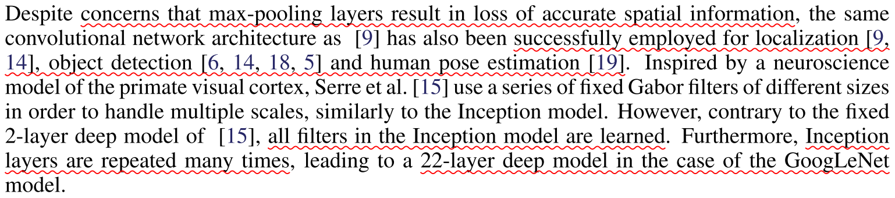
max-pooling layer가 정확한 공간 정보의 손실을 만든다는 우려에도 불구,
AlexNet 같은 네트워크 구조는 localization, object detection, 인간 자세 추정에 성공적으로 사용
영장류 시각 피질의 신경 과학 모델에서 영감을 받은 한 논문은
Thomas Serre, Lior Wolf, Stanley M. Bileschi, Maximilian Riesenhuber, and Tomaso Poggio. Robust object recognition with cortex-like mechanisms.
Inception 모델과 유사하게 multiple scales를 처리하기 위해 다양한 크기의 고정된 Gabor filter 사용
이 논문이 고정된 2-layer 심층 모델을 사용한 것과 달리, Inception 모델의 모든 필터는 학습
게다가 Inception layer는 여러번 반복되어 GoogLeNet의 경우 22-layer 심층 모델
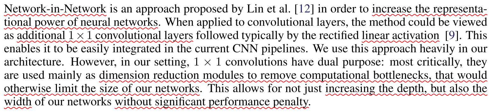
Network in Network는 신경망의 표현력을 높이기 위해 제안된 접근법
1 x 1 conv layer 추가, linear activation이 따라옴
-> 현재 CNN 파이프라인에 쉽게 통합 가능
1 x 1 conv layer의 목적
: 네트워크의 크기를 제한할 수 있는 계산 병목 현상을 제거하기 위한 차원 축소 모듈
-> 성능 저하 없이 네트워크의 depth, width 증가
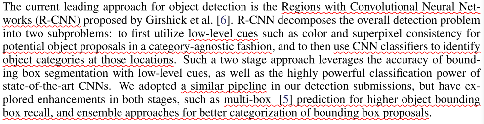
R-CNN이 객체 감지 기술 선도
전반적인 탐지 문제를 두 가지 하위 문제로 분해
1. 색상과 질감 등 low-level feature를 활용해 카테고리에 제한되지 않는 방식으로 객체 위치 제안
2. CNN 분류기를 사용해 제안 위치에서 객체의 카테고리 분류
객체 탐지 문제에서 유사한 파이프라인을 사용
b-box 재현율을 높이기 위해,
multi-box 예측, b-box 제안을 더 잘 분류하기 위한 앙상블 방법 개선
Motivation and High Level Considerations
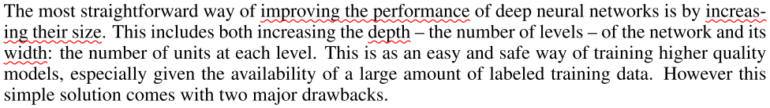
심층 신경망의 성능을 향상시키는 가장 직접적 방법은 depth, width 늘리는 것
-> 2가지 문제
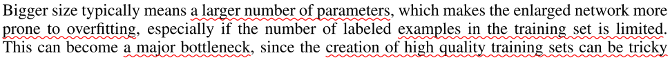
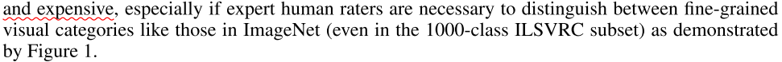
첫 번째 문제
모델이 커지면 파라미터 수가 늘어남
-> 학습 데이터의 수가 적을 때 쉽게 overfitting
특히 라벨링된 학습 데이터셋의 양이 적을 때 병목 현상
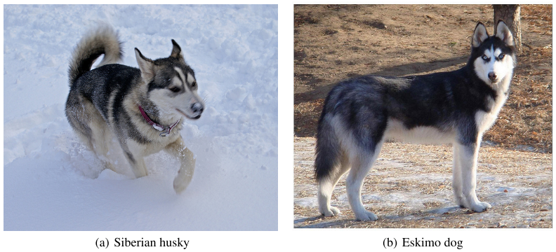
고품질 훈련 세트 생성은 까다롭고 많은 비용
그림의 두 개를 정확히 분류하기 위해서는 전문가가 필요
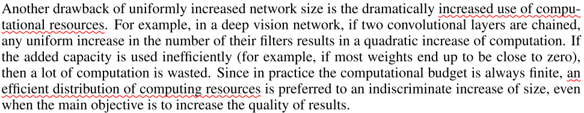
두 번째 문제
네트워크가 커지면 컴퓨팅 자원 급격히 증가
대부분의 가중치가 0에 가까울 때처럼 추가 용량을 비효율적으로 사용하면 낭비
컴퓨팅 자원은 한정적
-> 네트워크를 늘리는 것보다 컴퓨팅 자원을 효율적으로 분배하는 것이 중요
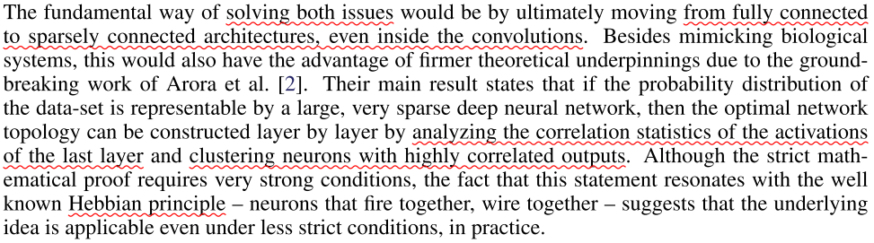
두 문제를 해결하기 위한 방법
FC layer나 conv layer 내부를 sparse layer로 교체하여 희소성 부여
생물학적 시스템 모방, Arora 연구진으로 부터 이론적 토대
dataset의 확률 분포를 sparse하고 큰 심층 신경망으로 나타낼 수 있다면,
앞선 계층의 활성화 값들의 상관 관계를 분석하고
상관 관계가 높은 뉴런들을 군집화해서 최적화 네트워크 구성
Hebbian principle: 동시에 활성화된 뉴런은 서로 연관이 있다
-> 수학적 증명이 가능할 만큼 엄격하지 않은 조건에서도 적용 가능함
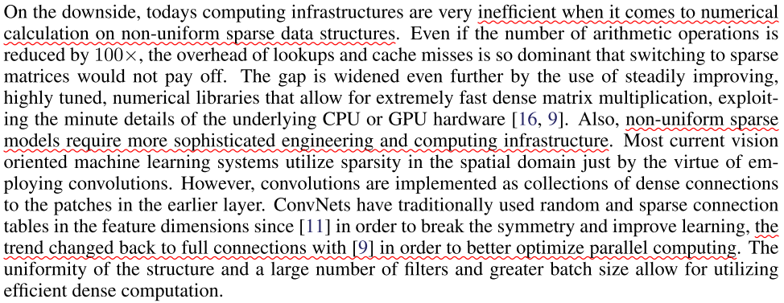
오늘날 컴퓨팅 인프라는 불균일한 희소 데이터 구조에 대한 수치 계산 비효율적
희소성을 도입하여 계산 수를 100배 감소시키더라도
조회와 캐시 누락으로 인한 계산 비용으로, sparse matrix 전환 효과가 거의 없음
균일하지 않은 희소 모델은 오히려 더 복잡한 엔지니어링과 컴퓨팅 인프라 필요
초기에는 특징 차원에서 랜덤 또는 희소 연결 테이블을 사용
병렬 연산에 최적화하기 위해 AlexNet처럼 FC를 이용하는 방식으로 바뀜
구조의 균일성, 많은 필터, 큰 batch 사이즈
-> 효율적인 조밀 연산
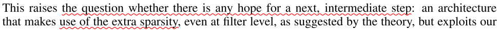
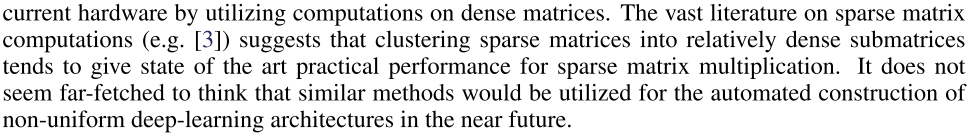
조밀 행렬 연산에 적합한 하드웨어를 활용할 때,
필터 수준 같은 중간 단계에서 희소성을 이용?
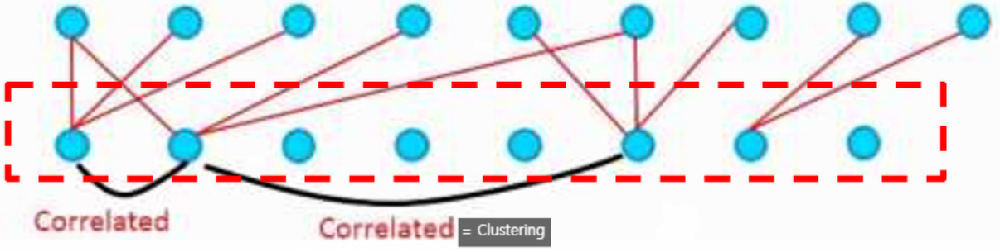
희소 행렬을 clustering, 상대적으로 밀도가 높은 하위 행렬 만들기
-> 희소 행렬 곱셈에 대해 실용적인 성능
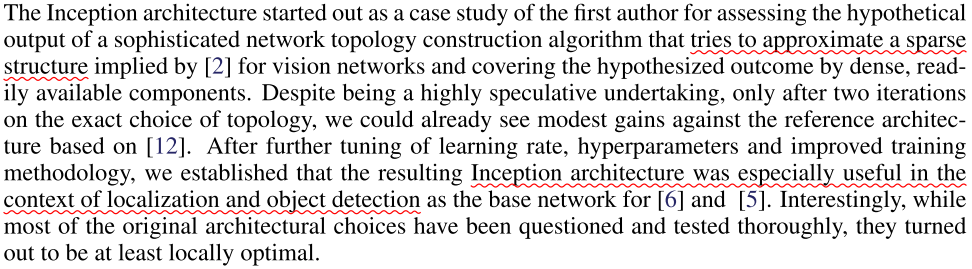
Inception 구조는 유사 sparse 구조를 시험하기 위해 시작
Inception을 R-CNN과 Scalable object detection의 기초 네트워크로 사용하면
객체 위치 식별과 객체 탐지 문제에서 특히 유용
Architectural Details
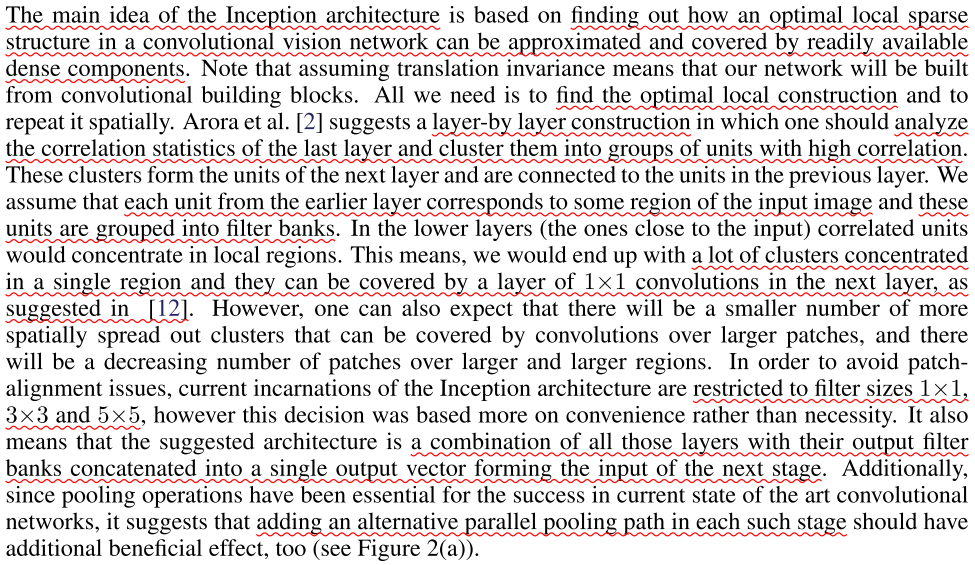
인셉션의 주요 아이디어는 최적의 지역적 희소 구조로 근사화하고
쉽게 사용 가능한 조밀한 구성 요소로 구성할 방법을 찾는 것
이를 위해 최적의 지역 구조를 찾는 것을 공간적으로 반복
Arora 연구진은 마지막 계층의 상관 관계를 분석하고
높은 상관관계의 유닛들을 군집화하는 layer-by-layer 구조 제안
군집들은 다음 계층의 유닛이 되고, 이전 계층의 유닛과 연결
이전 계층의 각 유닛이 입력 이미지 일부 영역에 해당, filter bank라는 그룹으로 만들어진다고 가정
입력과 가까운 하위 계층에서는 상관관계가 높은 유닛들이 로컬 영역에 집중
한 영역에 많은 군집들이 집중
-> NIN 제안처럼 다음 계층에서 1 x 1 conv layer로 처리 가능
필터 사이즈가 짝수일 때 중심을 어디로 할지 문제
-> 필터 크기를 1 x 1, 3 x 3, 5 x 5로 제한
다음 계층 입력값을 구성하는 단일 출력 벡터로 연결된 출력 필터 뱅크와
모든 layer를 조합한 구조를 제안
pooling 작업이 conv 네트워크 성공에 필수적
-> 각 단계에 병렬 pooling 경로 추가
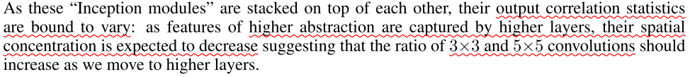
인셉션 모듈을 쌓으면 출력값의 상관관계는 매번 달라질 수 있음
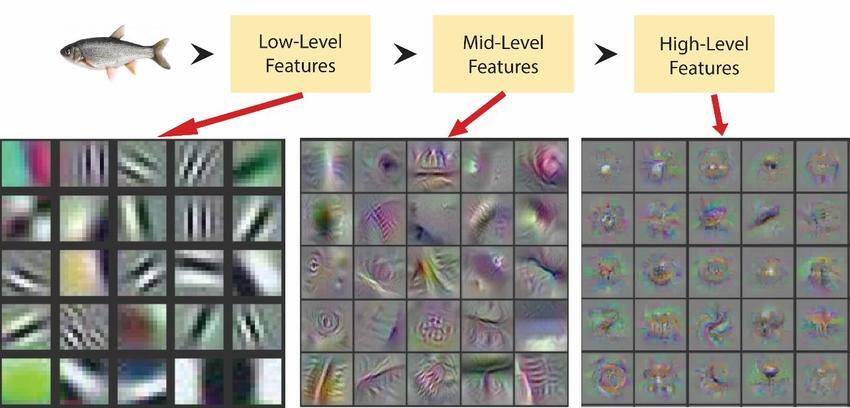
출력과 가까운 높은 계층은 높은 수준으로 추상화된 특징을 추출하므로 공간 집중도가 떨어질 것으로 예상
따라서 3 x 3, 5 x 5 conv layer 비욜은 높은 계층으로 갈수록 증가
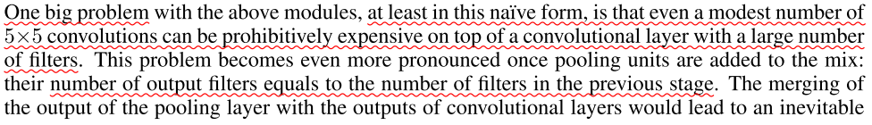
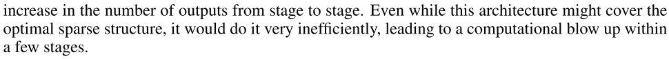
인셉션 모듈의 문제
단순한 형태에서도 필터의 수가 많아지면 5 x 5 conv layer를 적게 쌓더라도 계산량이 많아짐
pooling 유닛을 추가하면 문제가 더 분명해짐
출력값의 채널 수가 이전 계층의 필터 수와 같기 때문
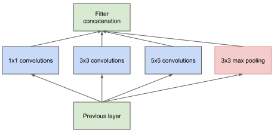
이 구조는 최적의 희소 구조를 찾을 수는 있지만
매우 비효율적으로 수행되어 컴퓨팅 자원을 박살낼 수도
-> 그래서 ..!
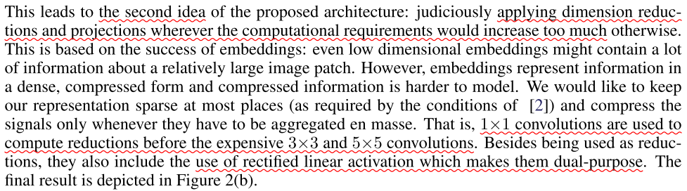
인셉션의 두 번째 아이디어
컴퓨팅 요구사항이 너무 증가하면, 차원을 축소하자
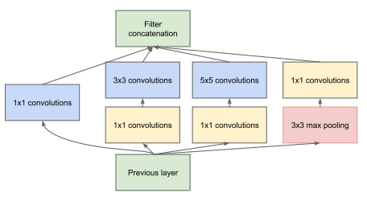
계산량이 큰 3 x 3, 5 x 5 conv 이전에 1 x 1 conv을 사용해 차원 축소
-> 계산량 감소, ReLU 사용으로 비선형성 추가
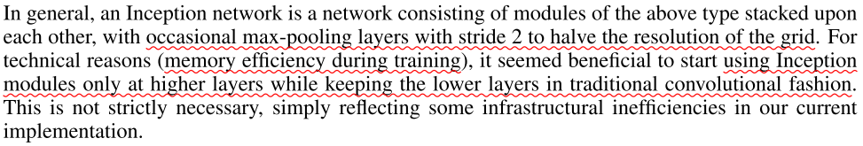
그리드의 해상도를 절반으로 줄이기 위해 stried=2인 max-pooling을 사용하기도
학습 과정에서 메모리를 효율적으로 사용하기 위해
낮은 계층에서는 기존의 conv 방식을 유지하고,
높은 계층에서만 인셉션 모듈을 사용하는 것이 좋음
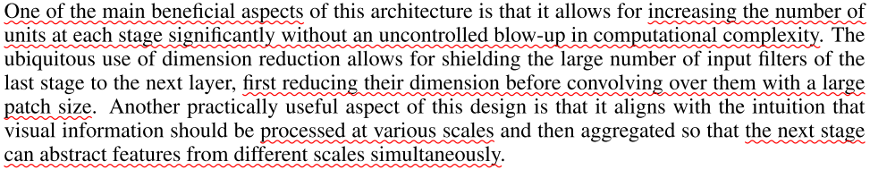
인셉션의 유용한 점
1. 후반 계층에서도 계산 복잡도가 제어 불가능하게 커지지 않으면서, 각 계층의 유닛 수를 늘릴 수 있음
계산 비용이 큰 conv layer 이전에 차원을 축소해서 다음 layer의 input 수를 조절 가능
2. 시각적 정보를 다양한 scale로 처리하고 다음 layer는 동시에 서로 다른 layer에서 특징 추출
1 x 1, 3 x 3, 5 x 5 conv 연산을 통해 다양한 특징 추출 가능
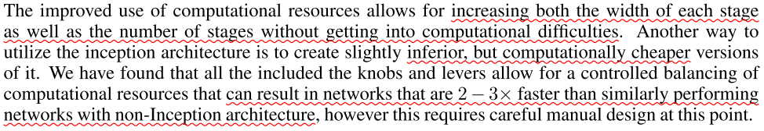
계산 자원의 개선된 사용
-> 계산 어려움 없이 계층의 깊이와 너비를 증가시킬 수 있음
인셉션을 활용하면 성능이 열등하더라도 계산량이 적고
2~3배 빠른 네트워크 만들 수 있음
GoogLeNet
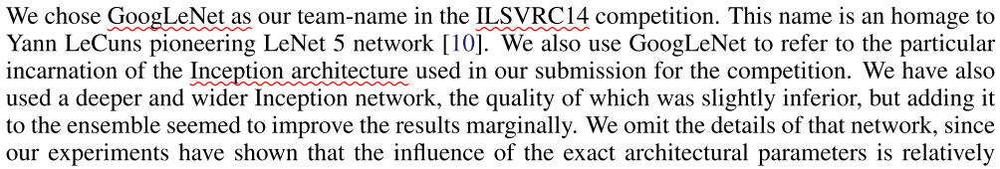
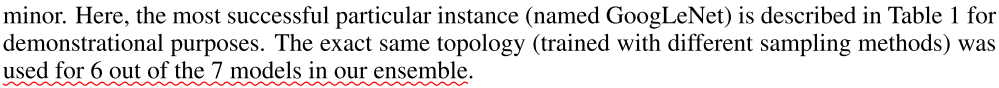
ILSVRC 2014 대회 제출 모델, 인셉션 아키텍처 적용
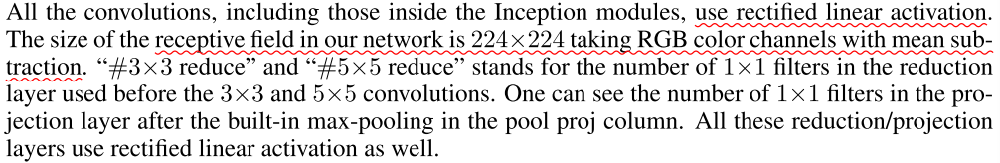
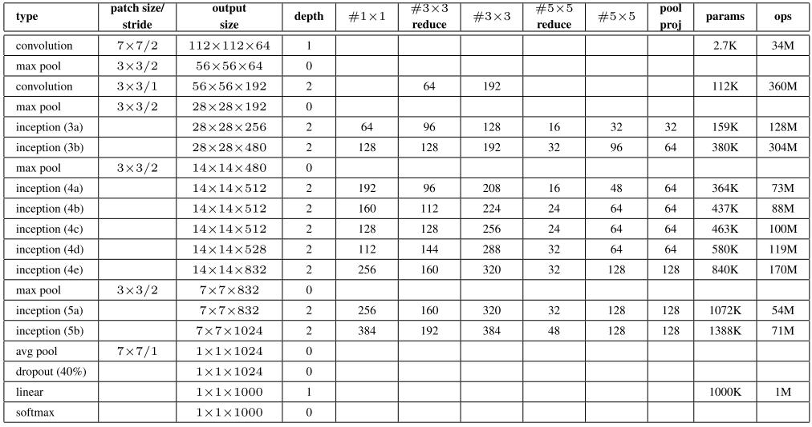
모든 conv layer는 ReLU를 활성화 함수로 사용
Receptive field(하나의 필터가 커버할 수 있는 이미지 영역의 일부)는 224 x 224, RGB, mean subtraction
'# 3 x 3 reduce'와 '# 5 x 5 reduce'는 3 x 3과 5 x 5 Conv layer 앞에 사용되는 1 x 1 필터의 채널 수
'pool projection'은 max pooling layer 뒤에 오는 1 x 1 필터의 채널 수
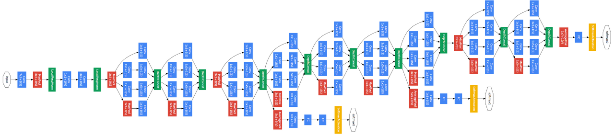
Part 1: 낮은 계층
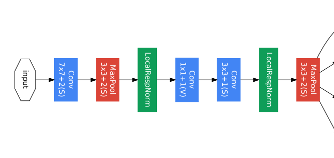
효율적인 메모리 사용을 위해 기본적인 CNN 모델 적용
인셉션 모듈 없음
Part 2: Inception module
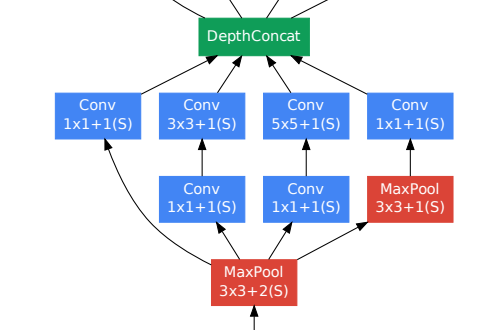
다양한 특징을 추출하기 위해 1 x 1, 3 x 3, 5 x 5 conv layer가 병렬적으로 연산 수행
차원 축소 위해 1 x 1 conv layer 적용
Part 3: Auxiliary classifier
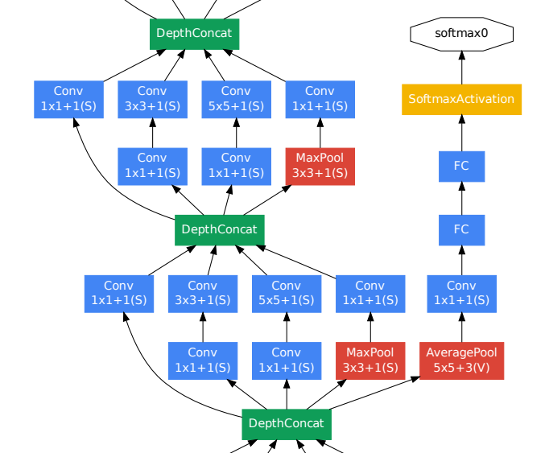
모델의 깊이가 너무 깊으면 기울기가 0으로 수렴하는 gradient vanishing 문제 발생 가능
보조 분류기(auxiliary classifier)를 중간 계층에 추가해
중간에서 결과를 출력해 추가 역전파를 일으켜 gradient가 전달될 수 있도록 함, 정규화 효과까지
학습 과정에서 보조 분류기의 오차에 가중치를 적용해 네트워크 전체 손실에 더함
본 연구에서는 0.3의 가중치
테스트 때는 보조 분류기 제거, 제일 끝의 softmax만 사용
Part 4: 모델의 끝 부분
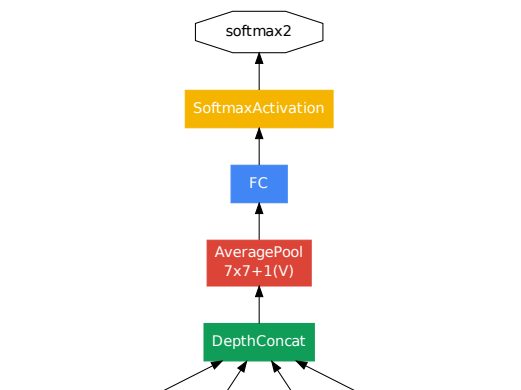
최종 분류 이전에 average pooling layer 사용
Global Average Pooling 적용
-> 이전 layer에서 추출된 feature map 각각 평균값을 이어 1차원 벡터로
최종 이미지 분류를 위한 softmax layer와 연결할 수 있기 때문
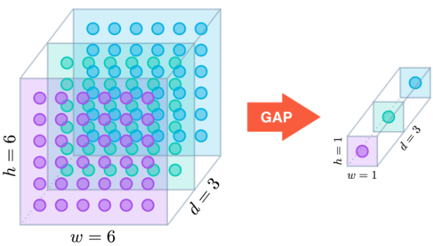
error 0.6% 감소 (top-1 기준)
Training Methodology
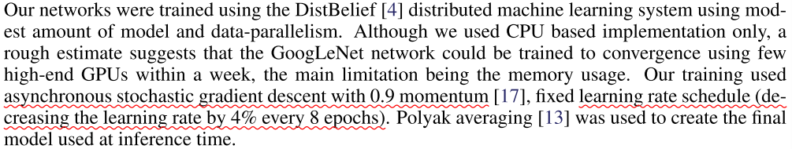
Optimizer: asynchronous stochastic gradient descent with 0.9 momentum
** SGD: 각 학습 샘플마다 gradient를 구하고 모델 파라미터 를 갱신 // 비동기 SGD는 무엇?
Learning rate: 8 epochs 마다 4%씩 감소
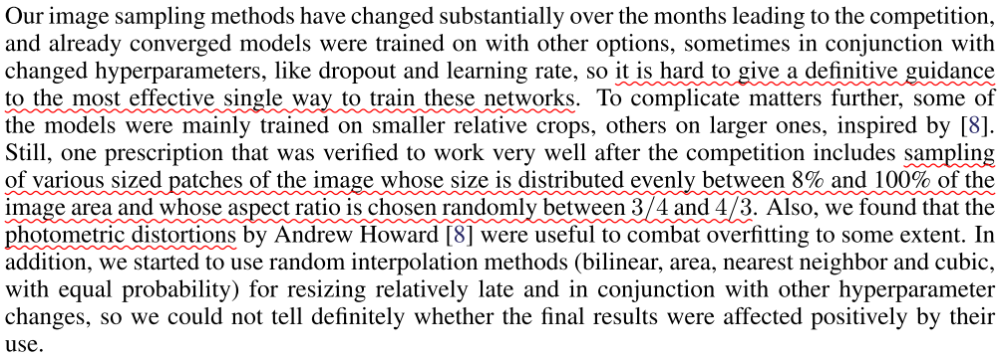
가장 효율적인 하나의 방법을 안내하기는 어렵
가로 세로 비율 3:4와 4:3 사이로 유지하며 원래 사이즈의 8 ~ 100%가 포함되도록 다양한 크기의 patch sampling
광도 왜곡(photometric distortions) 이용해 데이터 증대
ILSVRC 2014 Classification Challenge Setup and Results
ImageNet 이미지를 1000개 중 하나로 분류
120만 장 학습, 5만 장 검증, 10만 장 테스트
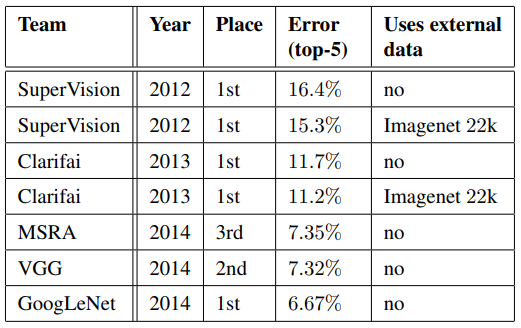
1. 동일한 GoogLeNet 모델의 7가지 버전을 독립적으로 학습, 앙상블
모델들은 동일한 초기값과 학습률 정책
학습 데이터를 무작위로 입력하기 때문에 이미지 순서와 샘플링 방법만 차이
2. 테스트하는 동안, AlexNet보다 적극적인 crop 도입
짧은 면을 기준으로 4가지(256, 288, 320, 352)의 크기로 조절
크기가 조정된 이미지에서 좌측, 중앙, 우측으로 상자를 취함 (세로 이미지의 경우 위, 중간, 아래)
각 상자에 대해 4개의 모서리와 중앙을 기준으로 224×224의 사이즈로 crop
사각형 자체의 크기를 224×224로 조정한 것과 좌우 대칭한 버전 취함
-> 이미지 별로 4×3×6×2=144장의 잘린 이미지가 생성
충분한 개수의 crop이 존재하면 더 많은 crop을 추가하는 것의 장점이 약해짐
-> 실제로는 이렇게 공격적인 crop이 필요하지 않을 수도
** data는 다다익선 아닌가? data에 비해 model이 약하면 model을 더 깊게..?
3. 최종 예측 결과를 얻기 위해 여러 crop과 모든 개별 분류기에 대해 평균 계산
ILSVRC 2014 Detection Challenge Setup and Results
200개 부류 객체 주위에 b-box 생성
객체가 참이고 경계 b-box의 50% 이상 겹치는 경우 정답
precision: 검출 한 것 중에 맞힌 확률
recall: 맞혀야 할 것 중에 맞힌 확률
AP: precision-recall 그래프 아래 면적
mAP: 물체 클래스가 여러 개인 경우 각 클래스 당 AP를 구하고 이를 합해 클래스의 개수로 나눠줌
R-CNN과 유사, 영역 분류기에 인셉션 모델 추가
multi-box 예측과 결합하여 객체 위치 제안 단계 강화
-> b-box 재현율 증가
super-pixel(특성이 유사한 픽셀들을 군집화하여 하나의 그룹으로 만드는 방법) 사이즈 2배 증가
-> 거짓 긍정 수 감소
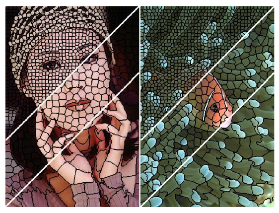
b-box의 총 개수는 R-CNN의 약 60%, 적용 범위는 92% -> 93%
-> mAP 1% 향상
Conclusions
Inception, sparse -> dense 구조로 근사화
얕고 좁은 아키텍처에 비해 컴퓨팅 비용이 조금 상승, 성능은 매우 향상